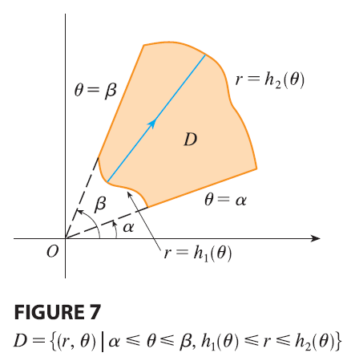

What we have done so far can be extended to the more complicated type of region shown in Figure 7. It’s similar to the type II rectangular regions considered in Section 15.2. In fact, by combining Formula 2 in this section with Formula 15.2.5, we obtain the following formula.
| If \(f\) is continuous on a polar region of the form \[ D = \{(r, \theta) | \alpha \le \theta \le \beta, h_1(\theta) \le r \le h_2(\theta)\} \] then \[ \iint_D f(x, y) dA = \int_\alpha^\beta \int_{h_1(\theta)}^{h_2(\theta)} f(r \cos \theta, r \sin \theta) r dr d\theta \tag{3} \] |
In particular, taking \(f(x, y) = 1, h_1(\theta) = 0,\) and \(h_2(\theta) = h(\theta)\) in this formula, we see that the area of the region \(D\) bounded by \(\theta = \alpha, \theta = \beta,\) and \(r = h(\theta)\) is \[ A(D) = \iint_D 1 dA = \int_\alpha^\beta \int_0^{h(\theta)} r dr d\theta = \int_\alpha^\beta \left[ \frac{r^2}{2} \right]_0^{h(\theta)} d\theta = \int_\alpha^\beta \frac{1}{2}[h(\theta)]^2 d\theta \] and this agrees with Formula 10.4.3.